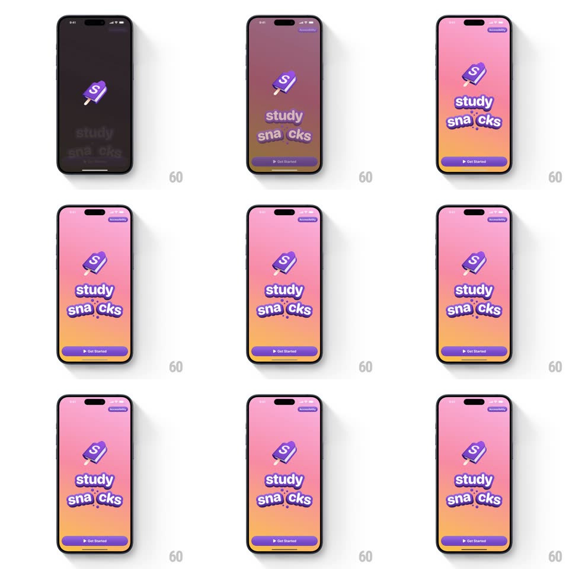

Media
Frame-by-frame

Rebuild this interaction 1:1: Study Snacks' splash - a purple popsicle logo bounces onto a black screen, a pink-to-orange gradient washes up behind it, the "study sna cks" wordmark pops in letter by letter with sprinkles, and a Get Started button settles at the bottom.

Rebuild this interaction 1:1: Study Snacks' splash - a purple popsicle logo bounces onto a black screen, a pink-to-orange gradient washes up behind it, the "study sna cks" wordmark pops in letter by letter with sprinkles, and a Get Started button settles at the bottom.
## Integration
Integration: stack-agnostic spec - springs given as stiffness/damping, timed motions as duration + curve; map every value to your framework and animation library of choice.
## Scene
Black screen with a small purple popsicle "S" logo. Resolved: vibrant pink-to-orange gradient, the popsicle above a chunky white wordmark ("study" over "sna cks" with candy-sprinkle dots), a purple "Get Started" pill at bottom, a small "Accessibility" pill top-right.
## Motion spec
Pattern: bouncing logo + staggered wordmark splash.
- The popsicle drops in from above (translateY -80 -> 0, spring ~260/12 - a rubbery double bounce) with a slight tilt (+-8deg) settling straight.
- Mid-bounce, the gradient washes upward from the bottom (600ms, ease-out) - the black screen fills with candy color.
- Wordmark: letters pop in with a fast stagger (scale 0.5 -> 1, spring ~460/16, 30ms per letter), the sprinkle dots raining onto "sna cks" last (tiny circles falling 20px with 20ms staggers, springy landings).
- The popsicle idles with a slow wobble (+-3deg, 2.2s sine).
- Get Started slides up (translateY 24 -> 0 + fade, 300ms, spring ~360/20) once the wordmark completes; Accessibility pill fades in top-right.
- Full sequence under 2s; the button is live the moment it lands.
## Calibration
- The bounce is the brand - underdamped and unapologetic; everything else is punctuation.
- Letters pop in word order, sprinkles last - the name reads as it's built.
## Reduced motion
Logo fades in; gradient and wordmark appear statically.
## Don't miss
- The gradient rises DURING the logo bounce - overlapping waves, not a sequence.
- The popsicle is 3D-glossy - flat art would break the candy illusion.